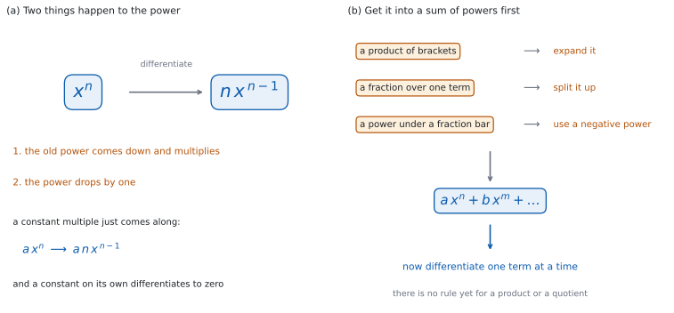

SL 5.3 — Differentiating \(ax^{n}\)（べき乗の微分）
- \(x^{n}\) の導関数が \(nx^{n-1}\) であることを使える（\(n\) は整数）。
- 定数倍 \(ax^{n}\) を微分できる。
- 和と差の形を、項ごとに微分できる。
- 定数の導関数が \(0\) であることを説明できる。
- 負の整数の指数（\(\dfrac{1}{x^{2}}\) など）を微分できる。
- かっこの積や分数を、まず \(ax^{n}\) の和の形に直してから微分できる。
- \(f'(a)\) のように、導関数に値を入れて使える。
The idea
1. べき乗の微分
\(n\) が整数のとき
\[ f(x) = x^{n} \quad \Longrightarrow \quad f'(x) = nx^{n-1} \tag{1}\]
です（図 1 (a)）。
公式集の 5.3 の欄に、Derivative of \(x^{n}\) として 式 1 が印刷されています。おぼえる必要はありませんが、どこにあるかは知っておいてください。
やることは \(2\) つです。 もとの指数を前に下ろしてかけ、指数を \(1\) 減らします。
使える \(x\) の範囲に気をつけてください。 \(n\) が正の整数のときは、すべての \(x\) で使えます。\(n\) が \(0\) 以下の整数のときは、\(x \ne 0\) のところだけです。 \(x^{n}\) も \(nx^{n-1}\) も、\(x = 0\) では値がありません。
このページでは \(n\) は整数です。 \(\sqrt{x} = x^{\frac{1}{2}}\) のような有理数の指数は SL 5.6a で扱います。
2. 定数倍
\(a\) が定数のとき
\[ f(x) = ax^{n} \quad \Longrightarrow \quad f'(x) = anx^{n-1} \tag{2}\]
です。定数はそのまま残ります。
式 2 は公式集にありません。 公式集にあるのは \(x^{n}\) の形だけです。定数倍の規則は、自分で使ってください。
\(a\) を先にかけても、あとでかけても同じです。 \(5x^{3}\) なら、\(x^{3}\) を微分して \(3x^{2}\)、それを \(5\) 倍して \(15x^{2}\) です。
\(3x\) の微分は \(3\) です。 \(3x = 3x^{1}\) なので、式 2 で \(n = 1\) とすると \(3 \times 1 \times x^{0} = 3\) になります（\(x^{0} = 1\)）。\(ax\) の導関数は、\(x = 0\) をふくめてどの \(x\) でも \(a\) です。
3. 和と差
項ごとに微分して、そのまま足し引きします。
\[ f(x) = ax^{n} + bx^{m} \quad \Longrightarrow \quad f'(x) = anx^{n-1} + bmx^{m-1} \tag{3}\]
この規則も公式集にありません。 和と差については、そのまま項ごとに計算してよい、と知っておいてください。
かけ算と割り算には、まだ規則がありません。 かっこの積や分数は、まず和の形に直します（図 1 (b)）。積の微分法と商の微分法は SL 5.6b です。
4. 定数の微分
定数の導関数は \(0\) です。
\[ f(x) = c \quad \Longrightarrow \quad f'(x) = 0 \tag{4}\]
\(y = c\) のグラフは水平な直線なので、傾きはどこでも \(0\) です。
だから、\(+7\) や \(-2\) のような項は、微分すると消えます。 消し忘れて残さないでください。
5. 負の指数
\(n\) が負の整数でも 式 1 は使えます。
\[ \frac{1}{x^{k}} = x^{-k} \qquad (x \ne 0) \tag{5}\]
と書きかえてから微分します。この等式は \(x \ne 0\) のときのものです。 この形の問題文に「for \(x \ne 0\)」と書いてあるのは、そのためです。
| もとの形 | 直した形 |
|---|---|
| \(\dfrac{1}{x}\) | \(x^{-1}\) |
| \(\dfrac{1}{x^{2}}\) | \(x^{-2}\) |
| \(\dfrac{5}{x^{3}}\) | \(5x^{-3}\) |
指数を \(1\) 減らすと、負の数はさらに小さくなります。 \(x^{-3}\) の指数を \(1\) 減らすと \(-4\) です。\(-2\) ではありません。
答えは、分数の形にもどして書いてかまいません。 \(-3x^{-4}\) でも \(-\dfrac{3}{x^{4}}\) でも、どちらでも正しい答えです。
符号を調べるときは、\(x > 0\) と \(x < 0\) を分けて見てください。 \(x = 0\) でグラフが切れているので、\(f'\) の符号をひとまとめに語ることはできません（SL 5.2）。
6. 直してから微分する
式 3 が使えるのは、\(ax^{n}\) の和の形のときだけです。そうでないときは、先に直します（図 1 (b)）。
| 見た目 | すること |
|---|---|
| \((x+2)(x-5)\) | 展開する |
| \(\dfrac{x^{3} + 4x}{x}\) | 項ごとに分ける |
| \(\dfrac{6}{x^{2}}\) | 負の指数にする |
分けられるのは、分母が \(1\) つの項のときだけです。 \(\dfrac{1}{x + 2}\) は、この方法では分けられません。
直してよいのは、直した式ともとの式が同じ関数だからです。 \(x\) の動ける範囲で値がいつも等しければ、導関数も同じです。\(\dfrac{x^{3} + 4x}{x}\) を \(x^{2} + 4\) に直せるのは \(x \ne 0\) のときだけですが、\(x = 0\) はもとの式にもとから入っていないので、困りません。
7. 導関数に値を入れる
\(f'\) は関数なので、値を入れて使えます（SL 5.1）。
\(f'(3)\) は、\(x = 3\) での接線の傾きです。
\(f'(a) = 0\) のとき、その点を stationary point（停留点）といいます（SL 5.2）。接線が水平になる点です。
先に \(f'(x)\) を求めてから、値を入れます。 \(f(3)\) を先に計算してしまうと、それはただの数なので、微分すると \(0\) になってしまいます。
符号を見れば、そこで上がっているか下がっているかが分かります（SL 5.2）。
微分の計算は、AA では手でやります。このページの例題と演習は、すべて電卓なしで解ける形です。
グラフ画面に \(y = f(x)\) をかくと、\(x = a\) のあたりで上がっているか下がっているかが見えます。求めた \(f'(a)\) の符号と合っているかを確かめられます。
答案に書くのは、手で出した \(f'(x)\) と値です。 電卓は確かめに使ってください。

Why it works
なぜ、指数が前に下りてくるのでしょうか。 割線の傾きを計算すると、そうなるからです。
\(f(x) = x^{2}\) で見てみます。\(x\) から \(x + h\) までの割線の傾きは（SL 5.1）
\[ \frac{(x+h)^{2} - x^{2}}{h} = \frac{x^{2} + 2xh + h^{2} - x^{2}}{h} = \frac{2xh + h^{2}}{h} = 2x + h \]
です。\(h\) を \(0\) に近づけると \(2x\) に向かいます。\(x^{2}\) の導関数が \(2x\) になるのは、\((x+h)^{2}\) を展開したときの \(2xh\) の項から来ています。
\(x^{3}\) なら、\((x+h)^{3} = x^{3} + 3x^{2}h + 3xh^{2} + h^{3}\) なので、\(h\) の \(1\) 次の項は \(3x^{2}h\) です。この「\(h\) の \(1\) 次の係数」が導関数です。 二項定理（SL 1.9）から、\(x^{n}\) ではこの係数が \(nx^{n-1}\) になります。
ここでの \(n\) は正の整数です。 \(n\) が負の整数のときに同じ式が成り立つことは、この計算では出せません。SL では、そこは確かめずに使ってかまいません。
この計算そのものは、SL では求められていません。 使えればよいのですが、規則が天から降ってきたものではないことは知っておいてください。
なぜ、定数倍はそのまま残るのでしょうか。 グラフを縦に \(a\) 倍に伸ばすと、傾きも \(a\) 倍になるからです。
割線の傾きで見ると、分子が \(af(x+h) - af(x) = a\bigl(f(x+h) - f(x)\bigr)\) となり、\(a\) がくくり出せます。\(h\) を \(0\) に近づけても \(a\) は変わりません。
なぜ、項ごとに微分してよいのでしょうか。 割線の傾きの分子で、和がそのまま分けられるからです。
\(f(x) + g(x)\) の割線の傾きは
\[ \frac{\bigl(f(x+h) + g(x+h)\bigr) - \bigl(f(x) + g(x)\bigr)}{h} = \frac{f(x+h) - f(x)}{h} + \frac{g(x+h) - g(x)}{h} \]
と \(2\) つに分かれます。それぞれの行き先が \(f'(x)\) と \(g'(x)\) なので、合わせて \(f'(x) + g'(x)\) です。
かけ算では、同じようには分かれません。 \(f(x+h)g(x+h) - f(x)g(x)\) は \(2\) つの分数にきれいに分かれないので、別の規則が要ります（SL 5.6b）。
なぜ、定数の導関数は \(0\) なのでしょうか。 値が変わらないからです。
\(f(x) = c\) なら \(f(x+h) - f(x) = c - c = 0\) で、割線の傾きは \(\dfrac{0}{h} = 0\) です。\(h\) をどれだけ小さくしても \(0\) のままです。
Worked examples
問題文は英語です。意味が理解できなかったら、問題文の下の「日本語訳」を開いてください。解説は日本語です。
この項目は Paper 1 に出ます。 電卓なしで解ける形にしてあります。
例題 1 The function \(f\) is given by \(f(x) = 4x^{3} - 5x^{2} + 7x - 2\). Find \(f'(x)\).
日本語訳
関数 \(f\) は \(f(x) = 4x^{3} - 5x^{2} + 7x - 2\) で与えられます。\(f'(x)\) を求めなさい。
項ごとに 式 2 を使います。
| 項 | 指数 | 微分すると |
|---|---|---|
| \(4x^{3}\) | \(3\) | \(4 \times 3 x^{2} = 12x^{2}\) |
| \(-5x^{2}\) | \(2\) | \(-5 \times 2 x^{1} = -10x\) |
| \(7x\) | \(1\) | \(7 \times 1 x^{0} = 7\) |
| \(-2\) | — | \(0\) |
\[ f'(x) = 12x^{2} - 10x + 7 \]
検算（項の数）。 \(3\) 次式なので、導関数は \(2\) 次式です ✓ 定数項が消えて、項が \(4\) つから \(3\) つになりました。
検算（指数）。 \(3\)、\(2\)、\(1\) が、\(2\)、\(1\)、\(0\) に下がっています ✓ どれもちょうど \(1\) ずつです。定数項は指数がないので、消えます。
検算（定数項）。 \(-2\) は消えました ✓ 残っていたら、式 4 を使い忘れています。
検算（\(1\) 次の項）。 \(7x\) の導関数は \(7\) です ✓ \(7x\) のまま残していたら、指数を下げ忘れています。
\[f'(x) = 12x^{2} - 10x + 7\]
例題 2 The curve \(C\) has equation \(y = 3x^{5} - x\).
(a) Find \(\dfrac{dy}{dx}\).
(b) Find the gradient of \(C\) at the point where \(x = 2\).
日本語訳
曲線 \(C\) は \(y = 3x^{5} - x\) という方程式をもちます。
(a) \(\dfrac{dy}{dx}\) を求めなさい。
(b) \(x = 2\) の点における \(C\) の傾きを求めなさい。
(a) 項ごとに微分します。
\[ \frac{dy}{dx} = 3 \times 5 x^{4} - 1 = 15x^{4} - 1 \]
(b) \(x = 2\) を入れます（第 7 節）。
\[ 15 \times 2^{4} - 1 = 15 \times 16 - 1 = 240 - 1 = 239 \]
検算（\(2^{4}\)）。 \(2^{4} = 16\) ✓ \(2 \times 4 = 8\) ではありません。
検算（\(y\) の値と混同していないか）。 \(x = 2\) での \(y\) の値は \(3 \times 32 - 2 = 94\) で、傾きの \(239\) とはちがいます ✓ 求めたのは傾きのほうです。
検算（符号）。 \(\dfrac{dy}{dx} = 15x^{4} - 1\) が正になるのは \(x^{4} > \dfrac{1}{15}\) のときです。\(x = 2\) では \(x^{4} = 16\) なので、確かに正です ✓ \(x\) が \(0\) に近いところでは負になります。
検算（\(-x\) の項）。 \(-x\) の導関数は \(-1\) です ✓ \(0\) にしていたら、定数とまちがえています。
(a) \[\frac{dy}{dx} = 15x^{4} - 1\]
(b) \[15 \times 2^{4} - 1 = 240 - 1 = 239\]
例題 3 The function \(f\) is given by \(f(x) = \dfrac{2}{x^{3}}\), for \(x \ne 0\).
(a) Find \(f'(x)\).
(b) Find \(f'(1)\).
(c) Explain why \(f'(x) < 0\) for every value of \(x\) with \(x \ne 0\).
日本語訳
関数 \(f\) は \(f(x) = \dfrac{2}{x^{3}}\)（\(x \ne 0\)）で与えられます。
(a) \(f'(x)\) を求めなさい。
(b) \(f'(1)\) を求めなさい。
(c) \(x \ne 0\) であるすべての \(x\) について \(f'(x) < 0\) となる理由を説明しなさい。
(a) まず負の指数に直します（式 5）。
\[ f(x) = 2x^{-3} \]
\[ f'(x) = 2 \times (-3) x^{-4} = -6x^{-4} = -\frac{6}{x^{4}} \]
(b) \(x = 1\) を入れます。
\[ f'(1) = -\frac{6}{1^{4}} = -6 \]
(c) Explain なので、英語で理由を書きます。
試験ではこう書く
\(f'(x) = -\dfrac{6}{x^{4}}\). For any \(x \ne 0\) the power \(x^{4}\) is positive, because a fourth power of a non-zero real number is always positive. Dividing the negative number \(-6\) by a positive number gives a negative result, so \(f'(x) < 0\) for every \(x \ne 0\).
（\(f'(x) = -\dfrac{6}{x^{4}}\) である。\(x \ne 0\) なら \(x^{4}\) は正である。\(0\) でない実数の \(4\) 乗はつねに正だからである。負の数 \(-6\) を正の数で割ると負になるので、\(x \ne 0\) のすべてで \(f'(x) < 0\) である、という意味です。）
検算（指数の下げ方）。 \(-3\) を \(1\) 減らすと \(-4\) です ✓ \(-2\) にしていたら、向きをまちがえています。
検算（\(x = 2\) で数を入れる）。 \(f(2) = \dfrac{2}{8} = 0.25\)、\(f(2.1) = \dfrac{2}{9.261} = 0.2159\ldots\) です。割線の傾きは \(\dfrac{0.2159 - 0.25}{0.1} = -0.34\ldots\) ✓ \(f'(2) = -\dfrac{6}{16} = -0.375\) に近い値です。
検算（グラフの形で）。 \(f(x) = \dfrac{2}{x^{3}}\) は \(x > 0\) で右下がり、\(x < 0\) でも右下がりです ✓ (c) の答えと合っています。
検算（\(4\) 乗の符号）。 \((-2)^{4} = 16 > 0\)、\(2^{4} = 16 > 0\) ✓ \(4\) 乗は負になりません。
(a) \[f(x) = 2x^{-3}\] \[f'(x) = -6x^{-4} = -\frac{6}{x^{4}}\]
(b) \(f'(1) = -6\)
(c) \(x^{4} > 0\) for every \(x \ne 0\), and \(-6\) is negative, so \(-\dfrac{6}{x^{4}}\) is negative for every \(x \ne 0\)
例題 4 The function \(f\) is given by \(f(x) = (2x + 1)(x - 3)\).
(a) Find \(f'(x)\).
(b) A student writes \(f'(x) = 2 \times 1 = 2\). Explain the error in the student’s method.
日本語訳
関数 \(f\) は \(f(x) = (2x + 1)(x - 3)\) で与えられます。
(a) \(f'(x)\) を求めなさい。
(b) ある生徒が \(f'(x) = 2 \times 1 = 2\) と書きました。この生徒のやり方のどこがまちがっているかを説明しなさい。
(a) まず展開します（第 6 節）。
\[ f(x) = 2x^{2} - 6x + x - 3 = 2x^{2} - 5x - 3 \]
\[ f'(x) = 4x - 5 \]
(b) Explain なので、英語で書きます。
試験ではこう書く
The student has differentiated each bracket separately and multiplied the answers. Differentiation does not work that way for a product: the derivative of a product is not the product of the derivatives. Expanding first gives \(f(x) = 2x^{2} - 5x - 3\), so \(f'(x) = 4x - 5\), which is not the constant \(2\).
（生徒はかっこを別々に微分して、その答えをかけている。積についての微分はそのようには働かない。積の導関数は、導関数の積ではない。先に展開すると \(f(x) = 2x^{2} - 5x - 3\) なので \(f'(x) = 4x - 5\) であり、定数の \(2\) ではない、という意味です。）
検算（展開）。 \((2x+1)(x-3) = 2x^{2} - 6x + x - 3 = 2x^{2} - 5x - 3\) ✓
検算（\(1\) つの値で）。 \(x = 1\) で \(f(1) = (3)(-2) = -6\)、展開した式でも \(2 - 5 - 3 = -6\) ✓ 展開が合っています。\(x = 0\) だと 定数項しか確かめられないので、\(1\) を使います。
検算（生徒の答えと比べる）。 生徒の答え \(2\) は定数ですが、正しい答え \(4x - 5\) は \(x\) によって変わります ✓ \(x = 0\) では \(-5\) で、\(2\) とはちがいます。
検算（次数）。 \(f\) は \(2\) 次式なので、\(f'\) は \(1\) 次式です ✓ 定数にはなりません。
(a) \[f(x) = 2x^{2} - 5x - 3\] \[f'(x) = 4x - 5\]
(b) the derivative of a product is not the product of the derivatives; expanding first gives \(f(x) = 2x^{2} - 5x - 3\) and \(f'(x) = 4x - 5\)
Common errors
定数の導関数は \(0\) です（第 4 節）。\(+7\) のような項は残りません。
\(ax = ax^{1}\) なので、導関数は \(a\) です（第 2 節）。指数を \(1\) 減らすのを忘れないでください。
\(x^{-3}\) の指数を \(1\) 減らすと \(-4\) です（第 5 節）。\(-2\) ではありません。
まだ積の規則はありません（第 3 節）。先に展開してください。
\(\dfrac{1}{x + 2}\) は \(\dfrac{1}{x} + \dfrac{1}{2}\) ではありません（第 6 節）。分けられるのは、分母が \(1\) つの項のときだけです。
\(f'(3)\) を求めるときは、先に \(f'(x)\) を出します（第 7 節）。\(f(3)\) を先に計算すると、ただの数になってしまいます。
Exercises
各問題に、折りたたみが \(3\) つ付いています。日本語訳、解答例（答案用紙に書くべきこと。英語です。英語の答案例が付くものもあります）、解説（なぜそうなるか。日本語です）。
まず自分で解いて、次に解答例と見くらべてください。解説は、合わなかったときだけ開けば十分です。
1 The function \(f\) is given by \(f(x) = x^{7}\). Find \(f'(x)\).
日本語訳
関数 \(f\) は \(f(x) = x^{7}\) で与えられます。\(f'(x)\) を求めなさい。
\[f'(x) = 7x^{6}\]
2 The function \(f\) is given by \(f(x) = 5x^{3} - 2x^{2} + 9\). Find \(f'(x)\).
日本語訳
関数 \(f\) は \(f(x) = 5x^{3} - 2x^{2} + 9\) で与えられます。\(f'(x)\) を求めなさい。
\[f'(x) = 15x^{2} - 4x\]
3 The curve \(C\) has equation \(y = 6x - 4\). Find \(\dfrac{dy}{dx}\), and state what this tells you about the shape of \(C\). Explain why the constant term does not appear in your answer.
日本語訳
曲線 \(C\) は \(y = 6x - 4\) という方程式をもちます。\(\dfrac{dy}{dx}\) を求め、それが \(C\) の形について何を表しているかを書きなさい。また、定数項が答えに出てこない理由を説明しなさい。
\[\frac{dy}{dx} = 6\]
the gradient is \(6\) at every point, so \(C\) is a straight line of gradient \(6\)
a constant does not change as \(x\) changes, so it contributes nothing to the rate of change
\(6x = 6x^{1}\)、\(-4\) は定数です（第 2 節、第 4 節）。
検算（\(x\) が残っていないか）。 答えに \(x\) がありません ✓ どの点でも傾きが同じ、ということです。
検算（もとの式の形）。 \(y = 6x - 4\) は直線の式です ✓ 傾き \(6\) と合っています。
検算（定数を変えてみる）。 \(y = 6x + 100\) でも \(\dfrac{dy}{dx} = 6\) です ✓ 定数を変えてもグラフが上下に動くだけなので、傾きは変わりません。
試験ではこう書く
Differentiating term by term, \(6x\) gives \(6\) and the constant \(-4\) gives \(0\), so \(\dfrac{dy}{dx} = 6\). The gradient is \(6\) at every point, so \(C\) is a straight line of gradient \(6\). The constant does not appear because a derivative measures how \(y\) changes as \(x\) changes, and a constant term takes the same value for every \(x\), so it contributes nothing to that change.
4 The function \(f\) is given by \(f(x) = \dfrac{3}{x^{2}}\), for \(x \ne 0\). Find \(f'(x)\).
日本語訳
関数 \(f\) は \(f(x) = \dfrac{3}{x^{2}}\)（\(x \ne 0\)）で与えられます。\(f'(x)\) を求めなさい。
\[f(x) = 3x^{-2}\]
\[f'(x) = -6x^{-3} = -\frac{6}{x^{3}}\]
負の指数に直してから微分します（第 5 節）。
検算（係数）。 \(3 \times (-2) = -6\) ✓
検算（指数）。 \(-2\) を \(1\) 減らすと \(-3\) ✓
検算（\(x = 1\) で）。 \(f'(1) = -6\) ✓ \(x > 0\) で \(\dfrac{3}{x^{2}}\) は減っていくので、負になるはずです。
5 The function \(f\) is given by \(f(x) = x^{3} - 12x\). Find \(f'(2)\). Interpret what this value tells you about the graph of \(f\) at \(x = 2\).
日本語訳
関数 \(f\) は \(f(x) = x^{3} - 12x\) で与えられます。\(f'(2)\) を求めなさい。この値が \(x = 2\) における \(f\) のグラフについて何を表しているかを説明しなさい。
\[f'(x) = 3x^{2} - 12\]
\[f'(2) = 3 \times 4 - 12 = 0\]
the tangent at \(x = 2\) is horizontal, so the graph has a stationary point there
先に \(f'(x)\) を求めてから \(x = 2\) を入れます（第 7 節）。
検算（\(2^{2}\)）。 \(3 \times 2^{2} = 3 \times 4 = 12\) ✓ \(12 - 12 = 0\) です。
検算（両側の符号）。 \(f'(1) = 3 - 12 = -9 < 0\)、\(f'(3) = 27 - 12 = 15 > 0\) ✓ 符号が変わるので、\(x = 2\) でグラフは向きを変えます。
検算（もう \(1\) つの停留点）。 \(3x^{2} - 12 = 0\) の解は \(x = 2\) と \(x = -2\) です ✓ 停留点は \(2\) つあります。
試験ではこう書く
\(f'(x) = 3x^{2} - 12\), so \(f'(2) = 12 - 12 = 0\). Since \(f'(2)\) is the gradient of the tangent at \(x = 2\), the tangent there is horizontal and the graph has a stationary point at \(x = 2\). Checking either side, \(f'(1) = -9\) and \(f'(3) = 15\), so the sign changes and the graph turns at \(x = 2\).
6 The function \(f\) is given by \(f(x) = (x + 4)(x - 1)\). Find \(f'(x)\).
日本語訳
関数 \(f\) は \(f(x) = (x + 4)(x - 1)\) で与えられます。\(f'(x)\) を求めなさい。
\[f(x) = x^{2} + 3x - 4\]
\[f'(x) = 2x + 3\]
先に展開します（第 6 節）。
検算（展開）。 \((x+4)(x-1) = x^{2} - x + 4x - 4 = x^{2} + 3x - 4\) ✓
検算（\(1\) つの値で）。 \(x = 1\) で \(f(1) = (5)(0) = 0\)、展開した式でも \(1 + 3 - 4 = 0\) ✓
検算（次数）。 \(2\) 次式の導関数は \(1\) 次式です ✓
7 The function \(f\) is given by \(f(x) = \dfrac{x^{3} + 2x}{x}\), for \(x \ne 0\). Find \(f'(x)\). Explain why the expression can be simplified before differentiating.
日本語訳
関数 \(f\) は \(f(x) = \dfrac{x^{3} + 2x}{x}\)（\(x \ne 0\)）で与えられます。\(f'(x)\) を求めなさい。また、微分する前に式を簡単にできる理由を説明しなさい。
\[f(x) = \frac{x^{3}}{x} + \frac{2x}{x} = x^{2} + 2\]
\[f'(x) = 2x, \qquad x \ne 0\]
for \(x \ne 0\) the two expressions take the same value, so they are the same function and have the same derivative
the denominator is a single term, so each term of the numerator can be divided by it
分母が \(1\) 項なので、項ごとに分けられます（第 6 節）。
検算（\(1\) つの値で）。 \(x = 2\) で、もとの式は \(\dfrac{8 + 4}{2} = 6\)、直した式は \(4 + 2 = 6\) ✓
検算（定数項）。 \(+2\) は微分すると消えます ✓ だから \(f'(x) = 2x\) です。
検算（もう \(1\) つの値で）。 \(x = -1\) で、もとの式は \(\dfrac{-1 - 2}{-1} = 3\)、直した式は \(1 + 2 = 3\) ✓ 負の \(x\) でも合っています。
試験ではこう書く
The denominator is the single term \(x\), so each term of the numerator may be divided by it: \(\dfrac{x^{3} + 2x}{x} = x^{2} + 2\) for \(x \ne 0\). This is now a sum of powers, which can be differentiated term by term, giving \(f'(x) = 2x\). Simplifying is allowed because the two expressions are equal for every \(x\) in the domain.
8 The curve \(C\) has equation \(y = \dfrac{4}{x} + 3x^{2}\), for \(x \ne 0\). Find \(\dfrac{dy}{dx}\).
日本語訳
曲線 \(C\) は \(y = \dfrac{4}{x} + 3x^{2}\)（\(x \ne 0\)）という方程式をもちます。\(\dfrac{dy}{dx}\) を求めなさい。
\[y = 4x^{-1} + 3x^{2}\]
\[\frac{dy}{dx} = -4x^{-2} + 6x = -\frac{4}{x^{2}} + 6x\]
\(\dfrac{4}{x} = 4x^{-1}\) に直してから、項ごとに微分します（第 5 節）。
検算（係数）。 \(4 \times (-1) = -4\)、\(3 \times 2 = 6\) ✓
検算（指数）。 \(-1\) を \(1\) 減らすと \(-2\) ✓ \(0\) ではありません。
検算（\(x = 1\) で）。 \(\dfrac{dy}{dx} = -4 + 6 = 2\) ✓ \(2\) つの項の符号がちがうので、打ち消し合っています。
9 The function \(f\) is given by \(f(x) = 2x^{3} + kx\), where \(k\) is a constant. It is given that \(f'(1) = 12\). Find the value of \(k\).
日本語訳
関数 \(f\) は \(f(x) = 2x^{3} + kx\) で与えられます（\(k\) は定数）。\(f'(1) = 12\) です。\(k\) の値を求めなさい。
\[f'(x) = 6x^{2} + k\]
\[f'(1) = 6 + k = 12\]
\[k = 6\]
\(k\) は定数なので、\(kx\) の導関数は \(k\) です（第 2 節）。
検算（もどす）。 \(k = 6\) なら \(f'(x) = 6x^{2} + 6\) で、\(f'(1) = 6 + 6 = 12\) ✓
検算（\(k\) を消してしまっていないか）。 \(kx\) は定数ではなく、\(x\) の \(1\) 次の項です ✓ 導関数は \(0\) ではなく \(k\) です。
検算（\(1\) を入れる位置）。 \(6x^{2}\) に \(x = 1\) を入れて \(6\) です ✓ \(6 \times 1 = 6\) で、\(6^{2}\) ではありません。
10 A student writes that the derivative of \(x^{5}\) is \(5x^{5}\). Identify the error and write down the correct derivative.
日本語訳
ある生徒が「\(x^{5}\) の導関数は \(5x^{5}\) である」と書きました。まちがいを指摘し、正しい導関数を書きなさい。
the power was brought down but not reduced by one
\[\text{correct derivative} = 5x^{4}\]
式 1 の \(2\) つの動きのうち、\(1\) つしかしていません（第 1 節）。
検算（次数）。 \(x^{5}\) の導関数は \(4\) 次式のはずです ✓ \(5x^{5}\) は \(5\) 次式なので、次数が下がっていません。
検算（割線の傾きで）。 \(x = 2\) から \(x = 2.01\) までの割線の傾きは \(\dfrac{32.80804\ldots - 32}{0.01} = 80.804\ldots\) です。正しい答えでは \(5 \times 2^{4} = 80\)、生徒の答えでは \(5 \times 2^{5} = 160\) ✓ 割線の傾きは \(80\) のほうに近いので、\(5x^{4}\) が正しいと分かります。
検算（\(x = 1\) で）。 正しい答えでは \(5 \times 1^{4} = 5\) です ✓ 生徒の式でも \(5\) になりますが、\(x = 2\) では \(5 \times 16 = 80\) と \(5 \times 32 = 160\) でちがいます。
試験ではこう書く
Differentiating a power does two things: the old power comes down as a multiplier, and the power itself drops by one. The student has done the first but not the second, leaving the power as \(5\) instead of \(4\). The correct derivative is \(5x^{4}\).